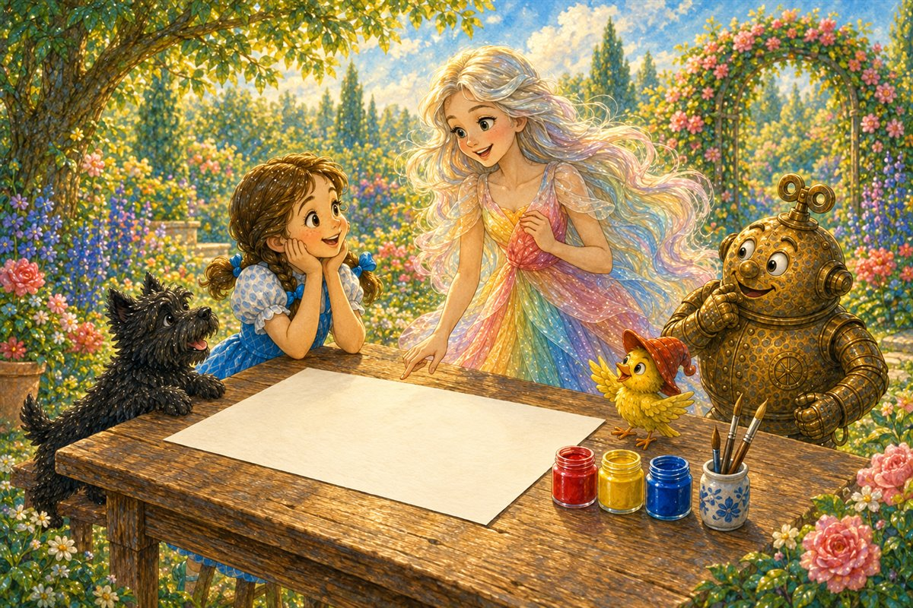
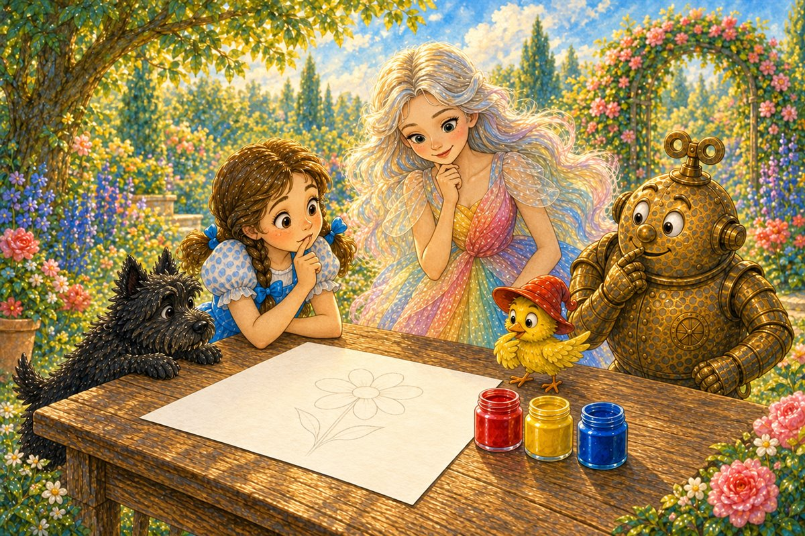
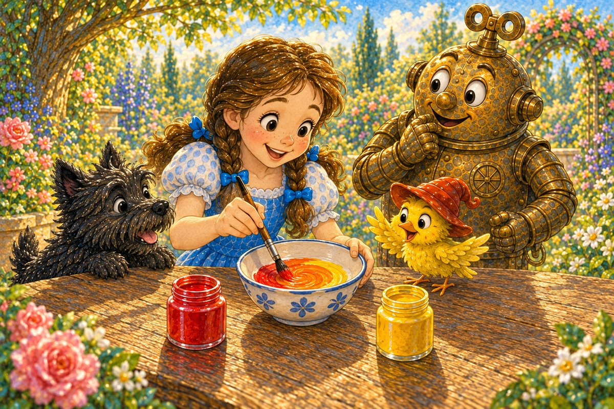
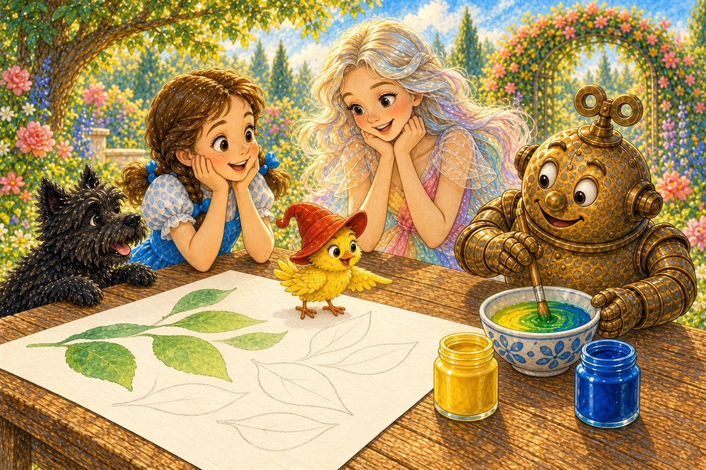
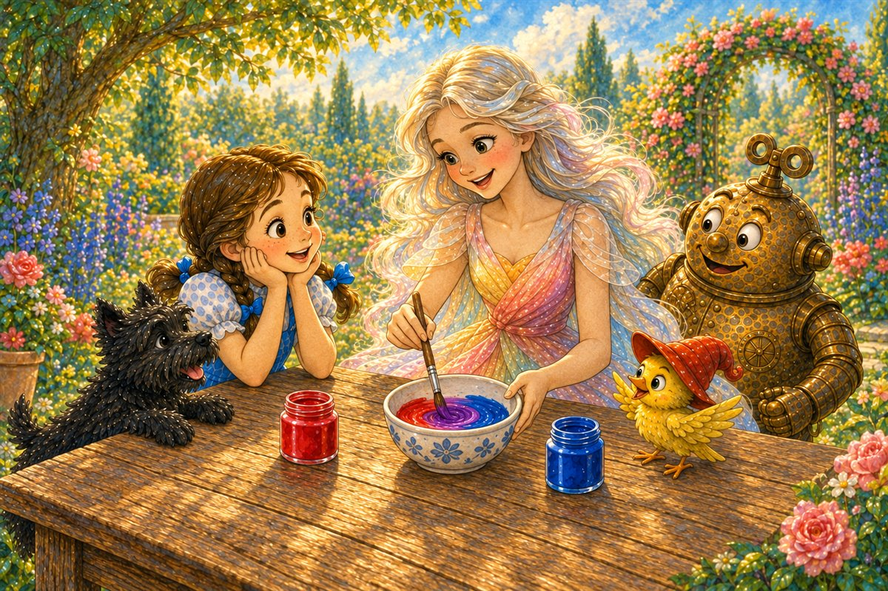
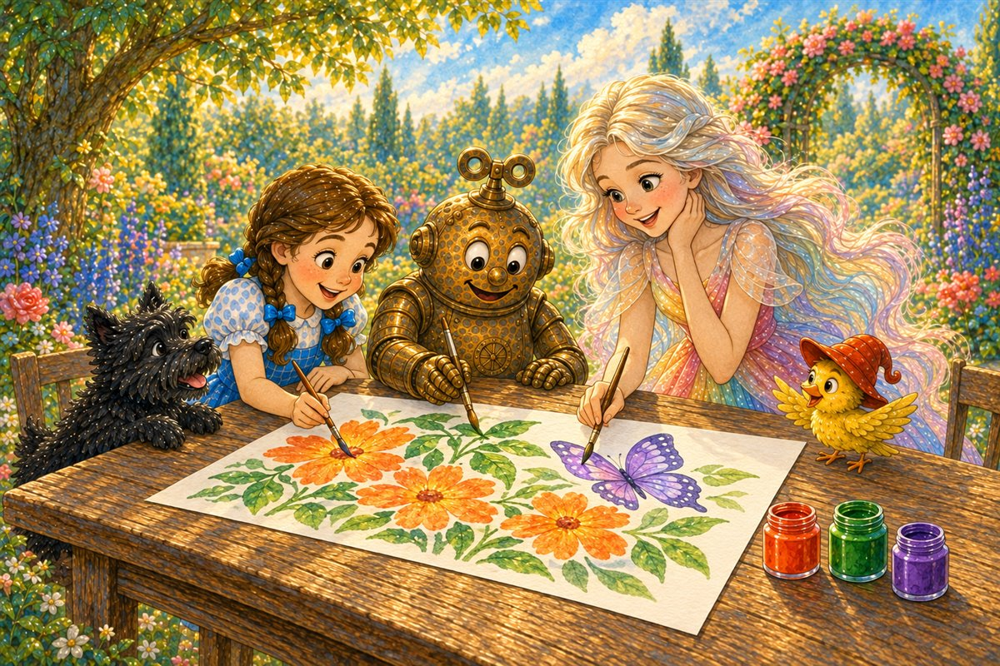
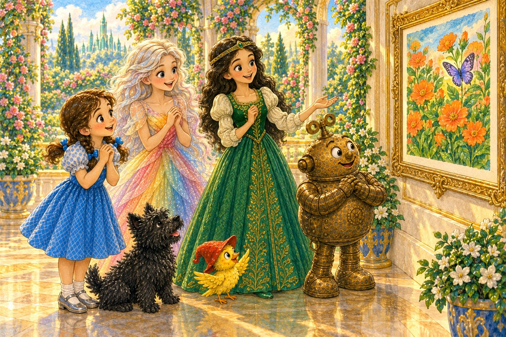

Pahina 1
Kinaumagahan, nanatili si Polychrome sa hardin.
Nakita niya si Dorothy sa tabi ng mesa.
May malaking blangkong papel sa ibabaw nito.
Isang bagong kuwento sa Lupain ng Oz
Basahin ang tatlong bagong pahina bawat araw. Bago magpatuloy, balikan muna ang mga pahinang nabasa na.

Kinaumagahan, nanatili si Polychrome sa hardin.
Nakita niya si Dorothy sa tabi ng mesa.
May malaking blangkong papel sa ibabaw nito.
“Gagawa ako ng larawan para kay Ozma,” sabi ni Dorothy.
Sa mesa ay may tatlong garapon ng pintura: pula, dilaw, at bughaw.

“Gusto ko ng kahel na bulaklak,” sabi ng ibon.
Hinanap nila ang kahel na pintura.
Wala silang nakita.
“Makakagawa tayo ng bagong kulay,” sabi ni Polychrome.
“Hahaluin natin ang dalawang kulay.”
Naglagay siya ng tatlong munting mangkok sa mesa.

Inilagay ni Dorothy ang pulang pintura at dilaw na pintura sa unang mangkok.
Hinalo niya ang mga ito.
Naging kahel ang pintura.
Ipininta ni Dorothy ang kahel na bulaklak.
Itinuro ni Tik-Tok ang mga dahon.
“Kailangan naman natin ng berde,” sabi niya.

Pinili ni Tik-Tok ang dilaw at bughaw.
Hinalo niya ang dalawang kulay sa ikalawang mangkok.
Naging berde ang pintura.

“Gusto ko ring magpinta ng paruparo,” sabi ni Polychrome.
Hinalo niya ang pula at bughaw sa huling mangkok.
Naging lila ang pintura.
Ngayon, may anim na kulay sa mesa.
May pula, dilaw, bughaw, kahel, berde, at lila.
Maingat nilang tiningnan ang bawat mangkok.

Sama-sama nilang tinapos ang larawan.
Ipininta ni Dorothy ang mga bulaklak.
Ipininta ni Tik-Tok ang mga dahon.
Ipininta ni Polychrome ang lilang paruparo.
Dumating si Ozma.
Nakita niya ang kahel na bulaklak, mga berdeng dahon, at lilang paruparo.
“Nakagawa kayo ng mga bagong kulay mula sa tatlong pintura!”

“Mananatili muna ako kasama ninyo,” sabi ni Polychrome.
Isinabit nila ang larawan sa palasyo.
“Bukas, gagawa tayo ng isa pa,” sabi ni Dorothy.
Ngumiti ang lahat.
Pag-usapan natin